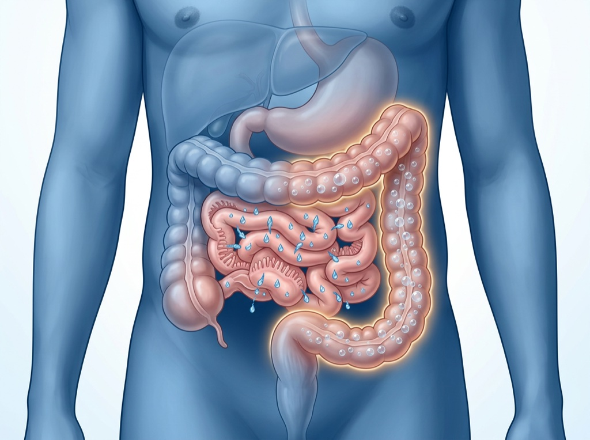
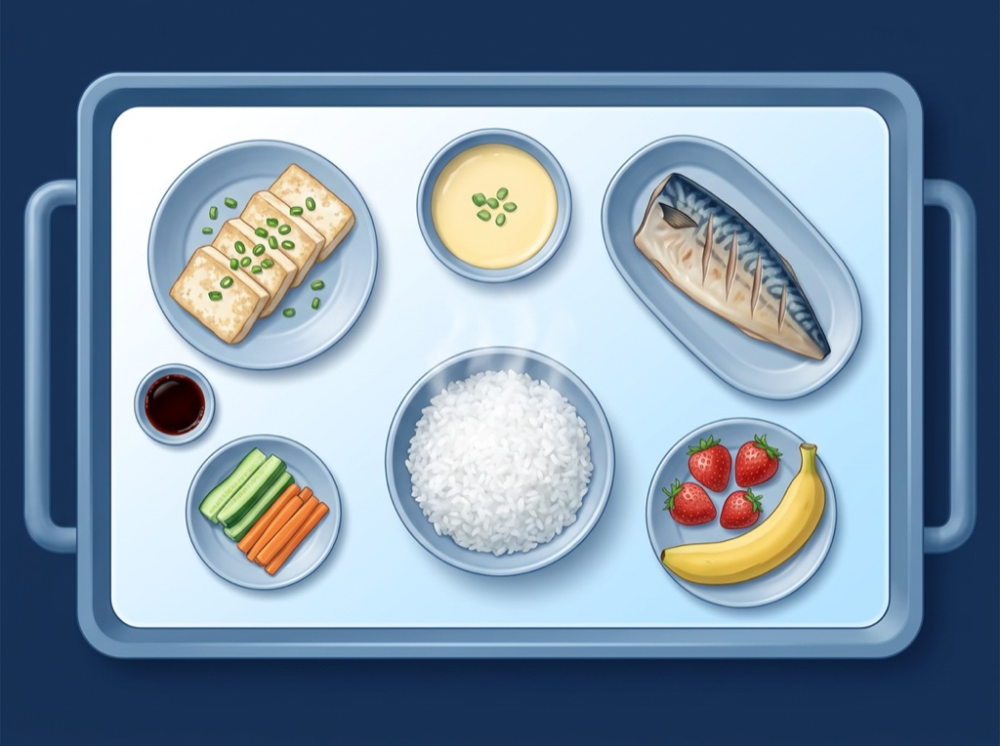

과민성장증후군(IBS) 식사 가이드 — 저FODMAP 3단계
과민성장증후군은 장과 뇌의 신호가 예민해져 생기는 장-뇌 상호작용 질환입니다. 마음의 문제가 아니며, 식단 조절만으로도 10명 중 5~8명에서 복통·팽만 증상이 뚜렷이 좋아집니다.
FODMAP이 증상을 일으키는 원리

소장 — 물 유입 · 대장 — 가스 발효
FODMAP = 장에서 흡수되지 않는 발효성 당류
① 소장에서 흡수되지 못하고 — 물을 장 안으로 끌어들여 설사·꾸르륵 소리를 유발합니다.
② 대장에서 세균에 의해 발효되어 — 가스가 차고 장이 부풀어 팽만감이 생깁니다.
③ 예민해진 장은 이 자극을 통증으로 — 같은 가스량에도 더 아프게 느낍니다.
대표 FODMAP — 과당(사과·꿀) · 유당(우유) · 프럭탄(마늘·양파·밀)
갈락토올리고당(콩류) · 폴리올(자일리톨·수박)
 저FODMAP 식단 3단계 — 반드시 끝까지 진행하세요
저FODMAP 식단 3단계 — 반드시 끝까지 진행하세요
| 단계 | 기간 | 하는 일 |
|---|
| 1단계 · 제한 | 2~6주만! | 고FODMAP 식품을 모두 줄이고 증상 일지를 씁니다. 좋아지는지 확인하는 진단 단계이며, 오래 이어가면 장내 유익균과 영양이 손해를 봅니다. |
| 2단계 · 재도입 | 6~8주 | FODMAP 그룹을 한 번에 하나씩, 3일 간격으로 다시 먹어 보며 나의 ‘진짜 범인’과 견딜 수 있는 양을 찾습니다. |
| 3단계 · 개인화 | 평생 유연하게 | 문제 없는 음식은 모두 되돌리고, 문제 식품만 양을 조절합니다. 가장 다양하게 먹으면서 증상 없는 식단이 최종 목표입니다. |
저FODMAP 식단으로 50~86%에서 복통·팽만이 좋아집니다. 처방약과 함께, 음식 조절이 증상 관리의 중심입니다.
 흔한 오해 바로잡기
흔한 오해 바로잡기
| 흔한 오해 | 바로 알기 |
|---|
| "평생 엄격하게 가려 먹어야 한다" | 엄격한 제한은 2~6주만. 그 후엔 다시 늘려가는 것이 정석입니다. |
|---|
| "글루텐(밀)을 무조건 끊어야 한다" | 진짜 원인은 글루텐이 아닌 밀의 프럭탄인 경우가 많습니다. 설사형은 셀리악병 검사를 먼저 확인합니다. |
|---|
| "스트레스 때문이니 마음먹기 나름이다" | 장 운동·감각 이상이 확인되는 실제 신체 질환입니다. 스트레스는 악화 요인일 뿐 원인의 전부가 아닙니다. |
|---|
 과민성장증후군의 진단·유형·약 치료 설명은 진료실 「과민성장증후군」 설명 자료 — edu.gwanggyobarun.com/decks/gi/ibs/ · 이 안내문은 성인용입니다. 아이의 복통에는 쓰지 말고 진료 때 상의하세요.
과민성장증후군의 진단·유형·약 치료 설명은 진료실 「과민성장증후군」 설명 자료 — edu.gwanggyobarun.com/decks/gi/ibs/ · 이 안내문은 성인용입니다. 아이의 복통에는 쓰지 말고 진료 때 상의하세요.
한국 음식 FODMAP 신호등과 실천 수칙
김치·된장까지 끊을 필요는 없습니다. 한식 기준으로 ‘마음껏 · 양 조절 · 잠시 중단’을 나누고, 일상 실천법을 정리했습니다.
 한국 음식 FODMAP 신호등 (제한기 2~6주 기준)
한국 음식 FODMAP 신호등 (제한기 2~6주 기준)
진료실 한 줄 요약 — 피할 것: 잡곡·양배추·마늘·양파·유제품·콩·사과 / 괜찮은 것: 쌀밥·감자·두부·바나나·당근. 종류·양·조리법에 따라 판정이 달라지니 아래 표로 확인하세요.
| 분류 | 대표 식품 | 한식 팁 |
|---|
● 안심
적정량 선택 | 쌀밥·감자 · 고기·생선·달걀 · 단단한 두부 · 오이·당근·상추·애호박 · 바나나·딸기·키위 | 배추는 한 끼 75g까지 안전 — 배추전·겉절이 소량 가능 |
|---|
● 소량 가능
양 조절 | 김치 2~3큰술 · 전통 된장 1큰술(12g) · 간장 · 고구마 ½개 | 김치는 1~2젓가락부터 늘리며 증상 기록 — 끊지 않아도 됩니다 |
|---|
● 잠시 중단
제한기 회피 | 마늘·양파(소량도) · 밀가루(빵·면·라면) · 사과·배·수박 · 우유·아이스크림 · 콩류·버섯 · 꿀·올리고당 | 고추장·쌈장·시판 양념은 마늘·물엿 때문에 제한기엔 보류
전통 발효 사워도우는 예외 |
|---|

제한기에도 든든한 한 끼
대체하기 · ‘무엇을’보다 ‘얼마나’
마늘 → 마늘향 기름·파 초록 부분·생강 · 밀면 → 쌀국수·100% 메밀 · 우유 → 락토프리 · 꿀 → 설탕 소량
같은 식품도 양에 따라 판정이 달라집니다 (Monash 측정 기준).
제한기 한 끼 예: 쌀밥 · 생선구이 · 달걀찜 · 오이 · 당근
 매일 실천 수칙 7
매일 실천 수칙 7
| 1. 규칙적으로, 소량씩, 천천히 먹고 과식을 피합니다. | 2. 증상 일지 — 먹은 것과 증상을 2주간 기록해 나만의 유발 음식을 찾습니다. |
| 3. 마늘·양파부터 점검 — 가장 흔한 ‘숨은 범인’입니다. | 4. 성분표 확인 — 양념·가공식품의 마늘·양파·밀·올리고당. |
| 5. 카페인·알코올·탄산·고지방·강한 매운맛을 줄입니다. | 6. 변비형은 수용성 섬유(차전자피·귀리)를 소량부터 천천히 + 물 충분히. |
| 7. 좋아져도 재도입 단계를 꼭 진행 — 평생 제한이 목표가 아닙니다. |

식단 조절보다 진료가 먼저인 위험 신호
다음 중 하나라도 있으면 식단 실험을 멈추고 바로 진료·검사를 받으세요 — 혈변·흑색변 · 의도하지 않은 체중 감소 · 빈혈 · 자다가 깰 정도의 야간 복통/설사 · 50세 이후 새로 시작된 증상 · 대장암/염증성 장질환 가족력 · 발열. ☏ 031-893-4560